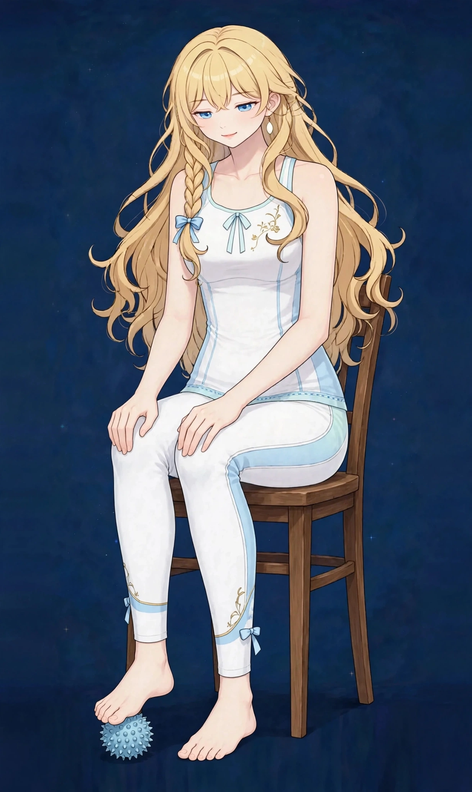

梅田で足の疲れケア｜立ち仕事の足裏・ふくらはぎの張りに巡り
接客や医療・介護、営業の外回りなど、立ったり歩いたりする時間が長い仕事では、夕方の足の疲れは深刻です。ヒールを履く日が続く方も、ふくらはぎや足裏に張りがたまりやすくなります。
足の疲れはどんな状態か
足の疲れは、足裏の張り、ふくらはぎのパンパン感、足全体のだるさといった感覚をまとめて表す言葉です。立ったり歩いたりする時間が長い仕事では、夕方になるほど深刻になりやすく、ヒールを履く日が続く方も張りがたまりやすい部位です。むくみ感と重なる部分もありますが、このページでは「使い続けたことによる疲れ」に焦点を当てています。
足は全身の体重を受け止める土台であり、足裏のアーチがクッションの役割を担っています。土台の疲れは、膝や腰の負担にもつながることがあるため、足だけの問題として切り取らず、下半身全体のつながりで見ることが大切です。急な痛みや腫れがある場合は、受診の目安をご確認ください。
こんなサインはありませんか？ — 足の疲れのチェックリスト
- 立ち仕事で夕方の足がつらい
- 歩く時間が長く足裏が張る
- ヒールを履く日が多い
- ふくらはぎがパンパンになる
- 帰宅するとまず靴を脱いで足を伸ばしたくなる
- 足裏を押すと強く響く場所がある
- 夕方になると靴の中で足が窮屈に感じる
- 階段の上り下りでふくらはぎが張りやすい
当てはまる項目が多いほど、負担がたまりやすい生活が続いている可能性があります。次の「要因」と見比べて、どこに負担が集まっているか確かめてみてください。
足の疲れにつながりやすい要因
- 立ち仕事と歩行の長さ：接客、医療・介護、営業の外回りなど、立つ・歩く時間が長い仕事は、足裏とふくらはぎへの負担が直に積み重なります。床の硬さも影響します。
- ヒールや靴の形状：ヒールの高い靴は体重が前足部に偏り、ふくらはぎが縮んだまま固定されやすくなります。靴底の薄さも、足裏への衝撃に直結します。
- ふくらはぎのポンプの疲労：ふくらはぎは巡りを押し戻すポンプの役割を担いますが、使い続ければ筋肉自体が疲労し、夕方には張りとして表れます。
- 足裏のアーチの負担：長時間の立位や歩行では、足裏のアーチを支える筋肉や組織に負担がかかります。朝の第一歩で足裏が張る方は、この負担のサインです。
- 冷えと巡りの滞り：足先は冷えやすく、冷えた状態で歩き続けると筋肉のこわばりが抜けにくくなります。冷えと疲れはセットで表れやすい組み合わせです。
- 回復時間の不足：連勤や忙しい時期が続くと、足の疲れは翌日に持ち越されます。休日に抜けきらない状態が続く場合は、回復の仕組みづくりが必要です。
図1｜足の疲れと関係する部位（背面）

東洋医学から見た考え方
東洋医学では、脚は水の巡りと深くつながり、疲れや重さがたまりやすい部位とされます。足裏からふくらはぎ、太ももまでを流れに沿ってほぐし、巡りを意識したケアを行います。
脚の背面を下りる膀胱経、前面を巡る胃経、側面を巡る胆経などが、足の見立てで関連づけられます。また、歩行のバランスと関連づけられる陽蹻脈も挙げられます。施術では、足裏からふくらはぎ、太ももまでを流れに沿ってほぐすのが東洋医学の考え方です。
代表的なツボ
足の疲れでよく挙げられるツボを紹介します。足裏のツボはボールを使うとご自宅でも圧をかけやすく、おすすめです。痛みが増す場合は中止してください。
図2｜足のツボの位置（背面）
おすすめ施術
オイルマッサージ
足裏、ふくらはぎ、太ももを重点的にほぐします。脚を中心に長めの時間を取る組み立ても可能です。
進め方は、足裏、ふくらはぎ、太ももを重点的に、足先から中心へ向かう方向を意識しながらほぐしていく流れです。ふくらはぎは張りの強い部分を先に緩め、足裏は指の付け根からかかとまでを丁寧に圧をかけていきます。
立ち仕事の繁忙期など、時期に合わせた使い方をされる方もいます。当日の歩いた量や靴の種類なども、差し支えなければお聞かせください。
自宅でできるセルフケア
足のセルフケアは、帰宅後の短い時間で「その日の疲れをその日のうちに」ほぐすことが基本です。痛みやしびれが出る場合は無理をせず中止し、続く場合は医療機関にご相談ください。
- 1．足裏ボール転がし椅子に座ってテニスボールやゴルフボールを足裏でゆっくり転がし、片足1分ずつ。湧泉のあたりで数秒止めて体重を預ける動きも組み合わせます。強さは「気持ちよい」程度が目安です。
- 2．ふくらはぎさすり入浴中に、ふくらはぎを下から上へ両手でさすり、承山を親指でゆっくり押します。温まった状態で行うと、張りが抜けやすくなります。
- 3．壁を使ったふくらはぎストレッチ壁に両手をつき、片足を後ろへ引いてかかとを床につけたまま20秒キープ。ふくらはぎが伸びる感覚が目安です。左右同様に行い、ヒールを履いた日ほど丁寧にどうぞ。
- 4．足首回しと脚上げ休息帰宅後、足首をゆっくり10回回し、クッションに脚を乗せて10分ほど休みます。足の疲れとむくみ感の両方に向けた、締めくくりのケアです。
図3｜セルフケア「足裏ボール転がし」の手順

場面別の注意
立ち仕事の日
休憩時間に靴を脱いで足首を回すだけでも、夕方の張りの積み重なり方が変わります。インソールや靴のクッションの見直しも、日常の負担を減らす工夫です。
ヒールを履いた日
帰宅後はふくらはぎストレッチを丁寧に行い、湯船で足首まで温めてください。ヒールの日が続く場合は、低い靴の日を挟む計画も足を守ります。
よく歩いた休日のあと
歩いた日の夜にボール転がしと脚上げ休息で締めくくると、翌日への持ち越しが少なくなります。連休の最終日に施術でリセットする使い方もおすすめです。
受診の目安
次のような場合は、サロンでのケアの前に医療機関への受診をおすすめします。
- 片脚だけが急に腫れている、熱や痛みを伴っている
- 足裏やかかとに鋭い痛みが続き、歩行に支障がある
- しびれが続く、力が入りにくい
- 転倒や打撲のあとから痛みが出た
- 痛みが日に日に強くなっている
当店は医療機関ではなく、診断は行いません。迷うときは、まずかかりつけの医療機関にご相談ください。
よくある質問
Q．脚だけ長くほぐしてもらえますか？
はい。90分の枠の中で、足裏から太ももまで脚中心の配分も可能です。ご予約時や当日に、脚中心でとお伝えください。
Q．むくみとの違いは何ですか？
むくみ感は水分の巡りが中心、足の疲れは使い続けたことによる張りやだるさが中心です。実際は重なっていることも多く、当日の状態を見て配分を調整します。関連ページの脚のむくみもあわせてご覧ください。
Q．立ち仕事の繁忙期だけ通うこともできますか？
はい。時期に合わせて集中的に使う方もいらっしゃいます。完全予約制のため、繁忙期は早めのご予約がおすすめです。
Q．施術のあとに気をつけることはありますか？
当日は長距離の歩行を控えめにし、湯船で温まって早めに休むのがおすすめです。水分補給もこまめにどうぞ。
関連するお悩みページ
関連する経絡ページ
ご予約
ステラポラリス（大阪・梅田／女性専用）｜オイルマッサージ 90分 10,000円｜月〜土 17:00〜22:00・完全予約制
ご予約はLINE公式アカウントで受け付けています。希望の日時と、気になる場所を送ってください。